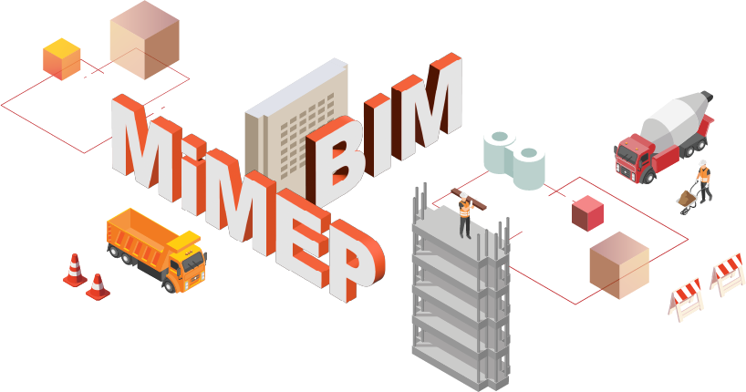

The Pictorial Guide was first published in 2010 to promote good practice in planning and design for safety in project life cycle. This edition aimed to include more examples of Hong Kong Housing Authority projects on planning and design of safety built up in past few years and to present the latest practice of our safety considerations for a development throughout the stages of design, construction, hand-over for intake and occupation, management, and maintenance. The Pictorial Guide can be downloaded from the Hong Kong Housing Authority Site Safety Website: www.housingauthority.gov.hk/sitesafety or by scanning the QR code.
Following the publication of the second edition in 2017, this third edition aimed to include more examples of Hong Kong Housing Authority projects on planning and design of safety built up in past few years and to present the latest practice of our safety considerations for a development throughout the stages of design, construction, hand-over for intake and occupation, management, and maintenance.
The adoption of Building Information Modelling (BIM) in standard specification of new works contracts, the introduction of robotic construction, Design for Manufacturing and Assembly (DfMA), Modular Integrated Construction (MiC) and Multi-trade Integrated Mechanical, Electrical and Plumbing (MiMEP) in public housing development exemplify the approaches of the Hong Kong Housing Authority to eliminate and mitigate the risks of construction work starting from the preliminary stage.
